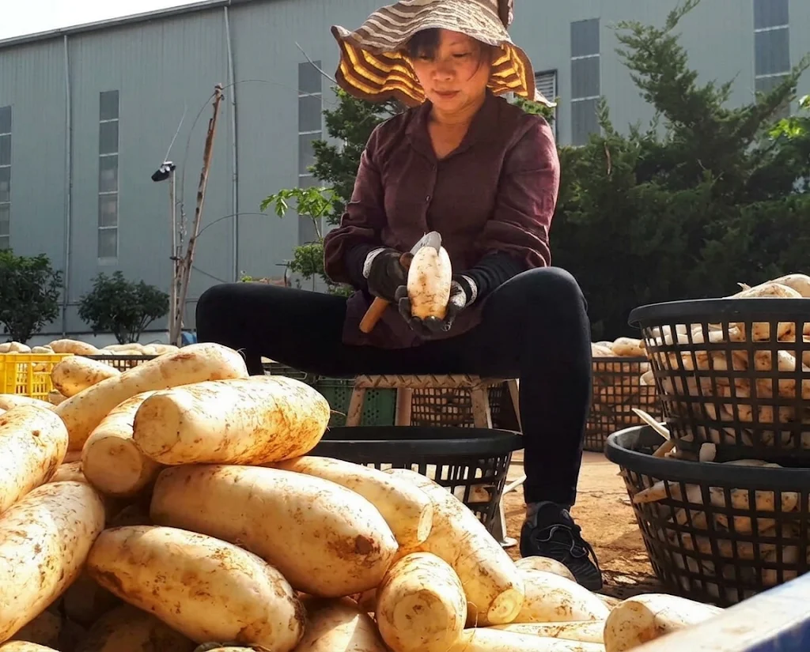

菜脯小故事
阿公阿婆留在
曬埕上的小故事。
做久了，手會記得怎麼切，眼睛會看什麼時候收。幾件看起來平常的小事，就這樣跟著一代一代留下來。

壓甕
壓了幾十年的石頭
那幾顆壓甕的石頭，一用就是幾十年。石頭把蘿蔔壓在缸裡，讓汁液慢慢擠出。家裡也常說，這些跟著甕用久的石頭上，住著耐鹽的酵母，把每一代熟悉的醃香接了下去。
收完一缸，石頭還留著，下個收成季再搬回甕上。看條仔脯如何壓甕。
手切
阿婆怎麼還是用手切？
每顆蘿蔔的纖維方向都不同。阿婆會先看紋理，再一條一條下刀。角度切得不好，原本看起來厚厚的一條，乾縮後可能薄得像紙，切脯的口感也就少了。
這麼多年，我們仍保留這道手工。看看阿婆切條的原站影片。
回缸
白天曬，晚上再回缸
一整天曬去水氣，晚上又把蘿蔔壓回缸，吸回之前留下的汁液。外人看以為曬到全乾就能收，家裡還要看它吸了幾回汁、到了什麼重量。
一進一出，甕裡的味道才慢慢留在菜脯裡。